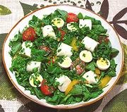

|
Palm Hearts with WatercressBrazil - Salada de Agrião e Palmito | ||||
| Serves: Effort: Sched: DoAhead: |
10 salad ** 20 min Most |
This salad presents an fine mix of semi-exotic (but easy to find) ingredients. It's attractive and delicious, but has to be a built salad, if you just toss it, the watercress rises to the top and everything else sinks. | |||
|
12 1 16 8 12 3 ----- 1 1/2 1/4 1/2 1/4 ----- |
oz # oz T --- cl c c t t --- |
Watercress Hearts of Palm (1) Cherry Tomatoes Bell Pepper, yellow Quail Eggs (2) Parsley -- Dressing Garlic Olive Oil, ExtV Wine Vinegar, white Salt Pepper ------------ |
Make - (20 min)
|